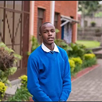
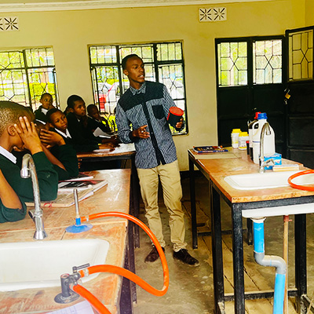

-

2009-2015
My Humble Beginnings
My journey into academia began, I enrolled in primary school in 2009 at the school of St. Jude in Arusha, Tanzania. I set my eyes on achieving great performance to advance to the secondary school. By 2015, I graduated and passed with good grades that helped me advance into secondary education.
-

2016 - 2022
Growing Wiser
After primary school, it was time to sharpen my knowledge. I was enrolled at Jude secondary school for my O-level and A-level secondary studies. In A-level I studied physics, chemistry and advanced mathematics as my major subjects
-

June 2022 - September 2023
Serving the community
I took a gap year after graduating from high school to commit to serving my community. I spent the first three months after graduating in the national service, thereafter I came to give back to my community through teaching, where I taught physics and chemistry to secondary students.
-

November 2023 - Present
Current program
Currently I am enrolled for a Bachelor degree in Computer science at the university of Dar es salaam, I am in my first year of study. I am enrolled in this course because I liked computers and electronics since childhood, they looked like nice fancy gadgets to keep around. As I grew older, I kept on realizing the potential that is held by computers such as in the internet, automation and our lives in general. Computers are driving the world and I need to be on the train. The course that I love in this program is programming in java, java is a high level language with multiple use cases such as mobile applications and websites backend programming.
-
The future!
Career goals
My future career goal is to have a job in the fintech sector, which is transitioning to paperless money through banking, securities and more modern blockchain technologies such as crypto currencies and non-fungible tokens (NFTs)
-
Be Part
Of my
Story!